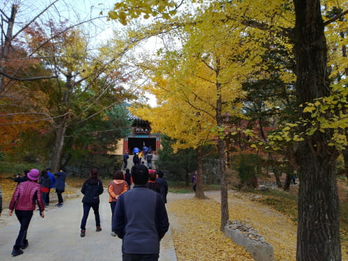
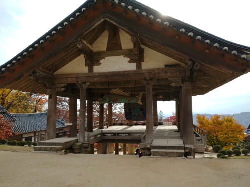

Gallery
소백산 줄기에 있는 부석사에서 지나가는 가을을 느껴본다
영주부석사
당간지주
표지와 함께 한켠에 서있다태백산 부석사
소백산 줄기에서 정작 현판은 태백산으로 되어 있네봉황산 부석사
여기는 또다른 현판이...부석사
그냥 부석사 현판이네가을 정취
아래로본 가을 정취

천왕문
경치가 아름 답다삼층석탑
사찰의 어디에서나 쉽게볼수 있는 삼층석탑
가을속의 부석사
지나가는 가을이 아쉬운듯 마지막 자태를 뽐내고 있다무량수전
유명한 배흘림 기둥이 보인다뜬돌
부석사의 이름이 여기에서 온듯지장전
한쪽 옆에서 조용히 서있다
